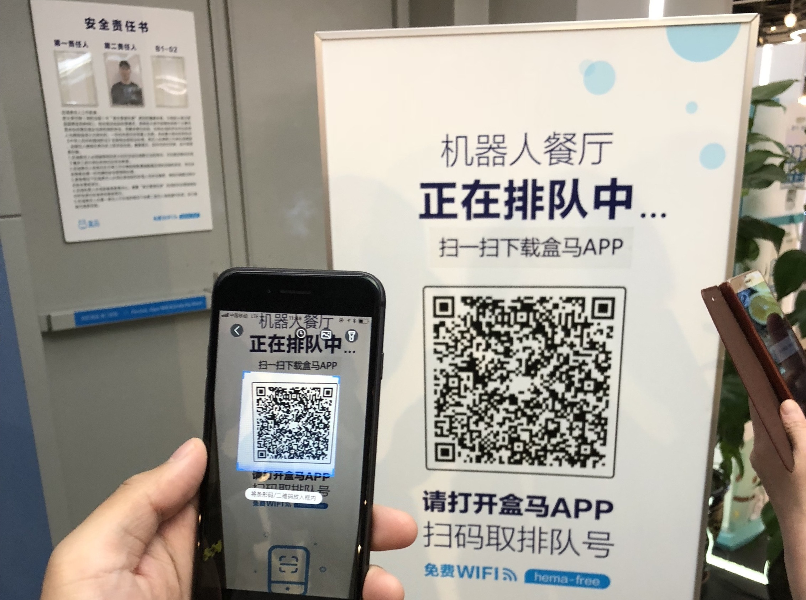
日本で既にトレンドとなっている「キャッシュレス」。だが、日本のキャッシュレス比率は先進国の中では非常に低いことをよく耳にする。日本のキャッシュレス化に向けたさまざまな取り組みが官民問わず行われている一方で、世界各国ではどのようにキャッシュレスが推進されているのか。そんな疑問を、インフキュリオン・グループに来年度入社する東京大学4年工学部物理工学科の森本颯太(はやた)が、内定者インターンとして「現金決済禁止という制約のもと完全キャッシュレスで世界11カ国を1カ月間単独」で調査。各国のキャッシュレス事情について現地の雰囲気とともに、その様子を7回に渡ってレポートしていく。現金が使えないからこそできる体験。現金がないと何もできない国もあれば、どんなところでもカードやアプリで決済できる国などさまざまで波乱万丈な旅となった。
記念すべき第1回目は、アジアから台湾と中国をレポート。1カ国目の台湾では、日本人観光客もよく訪れる士林夜市（シーリンイエシー）と九份（キューフン）に向かい観光地での決済を調査。2カ国目の中国ではよくニュースで見るQRコード決済の実情を調査すべく、アリババがオープンした新型レストラン「Hema」や1人カラオケ、無人コンビニなどのキャッシュレス店舗が多く存在する上海市内を中心に調査してきた。
台湾
1.交通系ICカード「悠遊カード」は必須
首都台北に着いて、早速市内に向かうため鉄道（MRT）に乗車。キャッシュレスで乗車するために、まず駅で交通系ICカード「悠遊カード」を購入。「電子決済総覧」によれば、台湾では主要な電子マネーは4種類ほど存在するが、その中でもこの悠遊カードは最も普及しており、2002年の発行開始から12年で、台湾人口のおよそ2倍に当たる累計5,000万枚を発行している。
多くの観光客はこのカードを駅で購入していた。というのもこのカードを利用すれば、鉄道の乗車金額が2割引になるからだ。この割引が、観光客の利用率を高めている。悠遊カードを購入するときにデポジット（100元）が必要になったが、カード販売機にはクレジットカード挿入口が見当たらない。横にいた駅員数名に聞くと、横のATMで現金を下ろしてチャージしてくれと言われる。デポジットをクレジットカード払いにすると、返金時のフローが複雑になり手間がかかってしまうからだと思われる。序盤だがしぶしぶ現金でチャージをした。（ちなみに今回の旅行で現金を使ったのは、これとインドでのチップの2回のみ。決済は0回）
今回は利用しなかったが、空港から市内にキャッシュレスで向かうには電車以外にもタクシーを使うことができる。空港に設置されていた広告を見る限り、クレジットカードやApple Payなども使用可能。ただし日本のApplePay等は日本独自の仕様のため外国では利用できないので注意が必要。
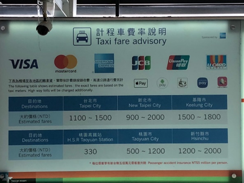
写真1.空港内のタクシー乗り場 丁寧に市内までの料金や支払い可能手段が表示されていた
2.台湾の観光地は現金ばかり？
2.1土林夜市（シーリンイエシー）の屋台には決済端末は置いてない
大勢の観光客で賑わい、お客を呼び込む屋台のスタッフの声が暑い夜に響き渡る、そんなアジア独特の雰囲気に呑まれながら、夜市を1人寂しく歩く。おいしそうな屋台のご飯の匂いがプンプンとしていたが、ここでは何も食べることができない。残念ながら多くの屋台では現金払いばかりであった。仕方なく、飲み物を買うためにコンビニへ。コンビニではクレジットカードや悠遊カードでも支払いが可能であった。
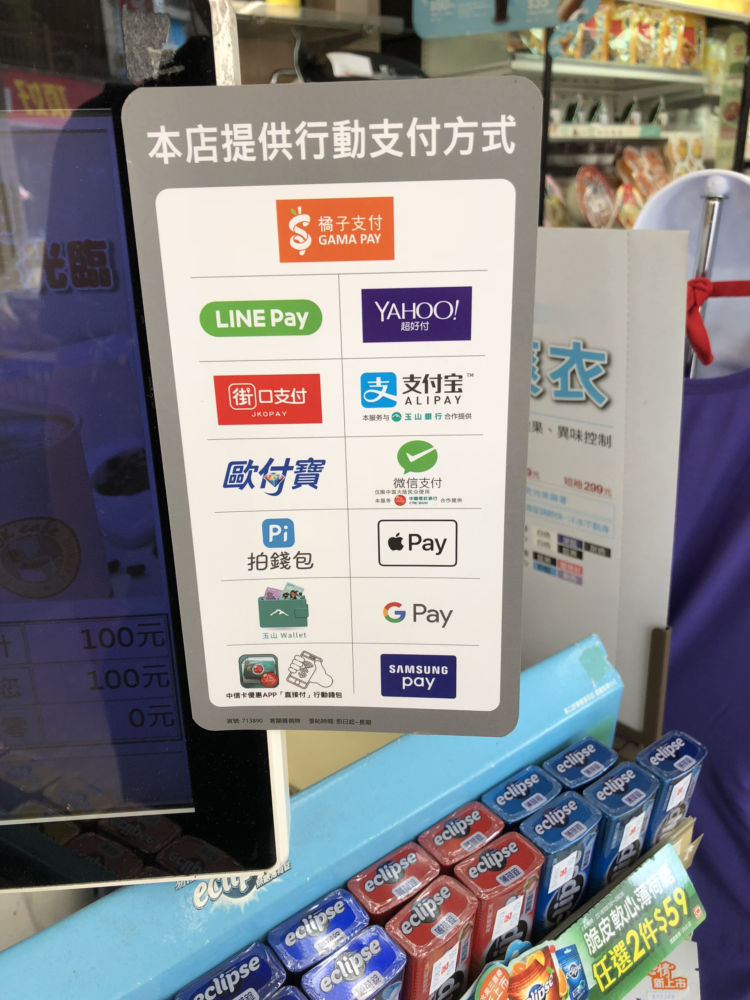
写真2.市内コンビニではLINE Pay決済も可能
ただ全ての屋台が現金払いだけというわけではなく、全体の10％ほどの屋台やお土産屋では後述するWeChat PayやAlipay、またLINE Payが利用可能な店舗を見つけることもできた。しかし他の観光客はしっかり現金を用意しているそうで、実際にQRコード決済をしている人は見ることはできなかった。
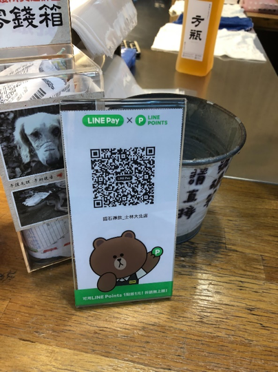
写真3.夜市のお土産屋 LINE Payのほかにも中国のQRコード決済アプリで決済可能な店舗も存在した
現金を持たない方には夜市はお勧めできない。なぜならお腹が減ったとしてもコンビニのパンくらいしか買えるものがないからだ。
2.2現金があった方が数倍楽しめる九份（キューフン）
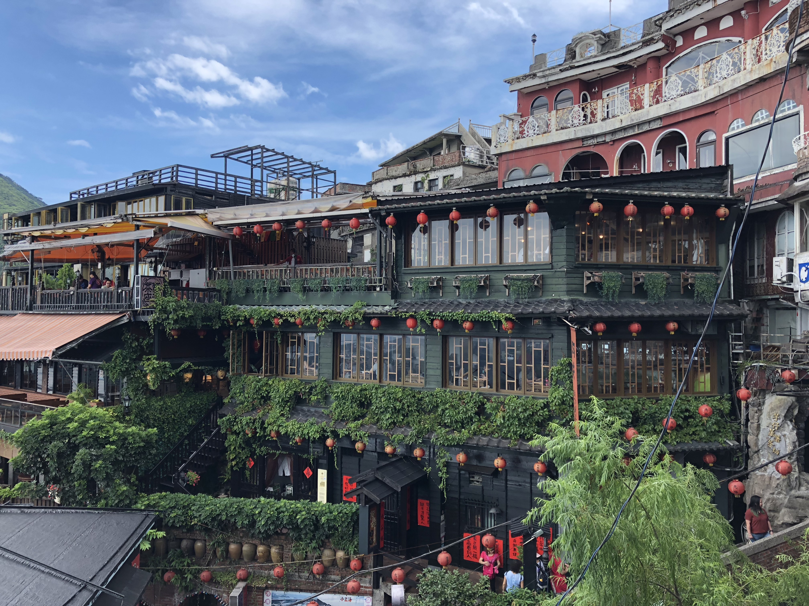
写真4.多くの観光客が訪れる九份
次の日は、台北から西に40kmほど離れている九份に特急電車で向かった。電車の指定席に乗るためには悠遊カードではなく、券売機でチケットを購入する必要があったので券売機を探すと、幸いなことにクレジットカード支払い可能であった。2時間の電車を立ちっぱなしで移動するということにはならずホッとした。
台北市内から離れたコンビニでも市内同様、各キャッシュレス決済対応だった。ただ自動販売機やレストランなどでは現金のみ支払い可能。
バスでも悠遊カードを使うことができる。
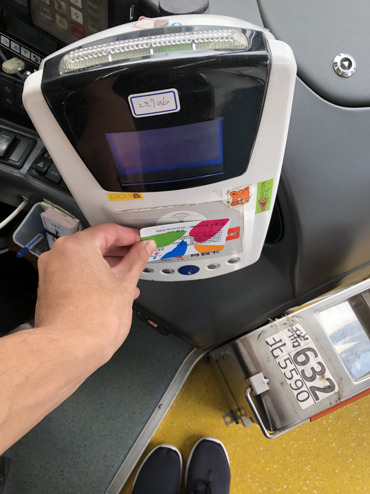
写真5.バス内の決済端末
九份に到着。観光地とあってかキャッシュレス決済可能な露店は多く、特にAlipayやWeChat Payのロゴを多く見かけた。体感としては、50％ほどの店舗でキャッシュレス決済可能だが、金額の低い飲み物や料理に関しては決済できない店舗が目立った。
夜市と同じく、ほとんどの観光客は現金を持ち歩いており、「海外では現金がないと欲しいものが買えないときもあり心配になる」という意見が多かった。

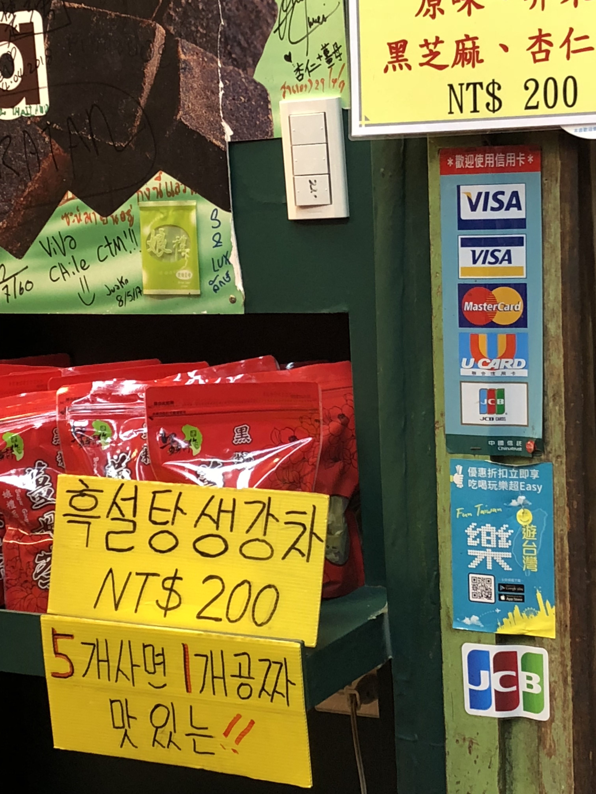
写真6,7.九份の露店の多くはQRコード、カード決済対応済み
ランチをするためにお店を探したが、3店舗連続でカード決済ができずカード決済可能なお店を見つけるのに苦労した。少し市内から離れるとやはり現金決済が主流であった。
観光名物の料理や飲み物は現金がないと購入できない場合がほとんどなので、普通に観光を楽しみたい場合はぜひ現金持参をしていただきたい。
3.台湾のまとめ
・観光地では高額商品はカード決済可能。食べ物や飲み物などの低価格商品はカード決済できないが、QRコード決済が可能な場合が多かった。だが実際にQRコード決済をしている人は見かけなかった。
中国
キャッシュレスといえば中国。世界最大級のECサイトを運営するアリババグループが展開する「Alipay」と、時価総額がアジア最大だったこともあるテンセントが展開する「WeChat Pay」の二大QRコード決済アプリが普及しているこの国では、現金を使わずとも携帯一つあれば旅行中に何も不自由はなかった。
1.便利すぎるQRコード決済「WeChat Pay」
QRコード決済が中国で爆発的に普及しているというニュースは、日本でも目にすることが多くなった。送金したい相手が表示しているQRコードを自分のアプリで読み取るだけで送金が完了する。日本ではまだまだ普及しきれていないこのQRコード決済の魅力を上海で感じることができた。
1.1デポジットだってQRコード
空港に着いて、まずはモバイルWi-Fiを借りるためお店に向かう。支払いはなんとWeChat Payですることができる。必要金額が明記されたQRコードを提示されるので、自分の携帯からスキャンして支払えばすぐに支払いが完了した。さらに驚いたことは、利用するモバイルWi-FiのデポジットもWeChat Payが使え、返却時には支払ったデポジット代金をそのまま自分のアプリに送金してもらえる。もちろん送金手数料などはない。通常海外でのデポジットは高い場合が多く、また金額の代わりに身分証を預ける場合もあり不安になるが、中国ではWeChat Payがあれば、そのような心配はしなくて済む。
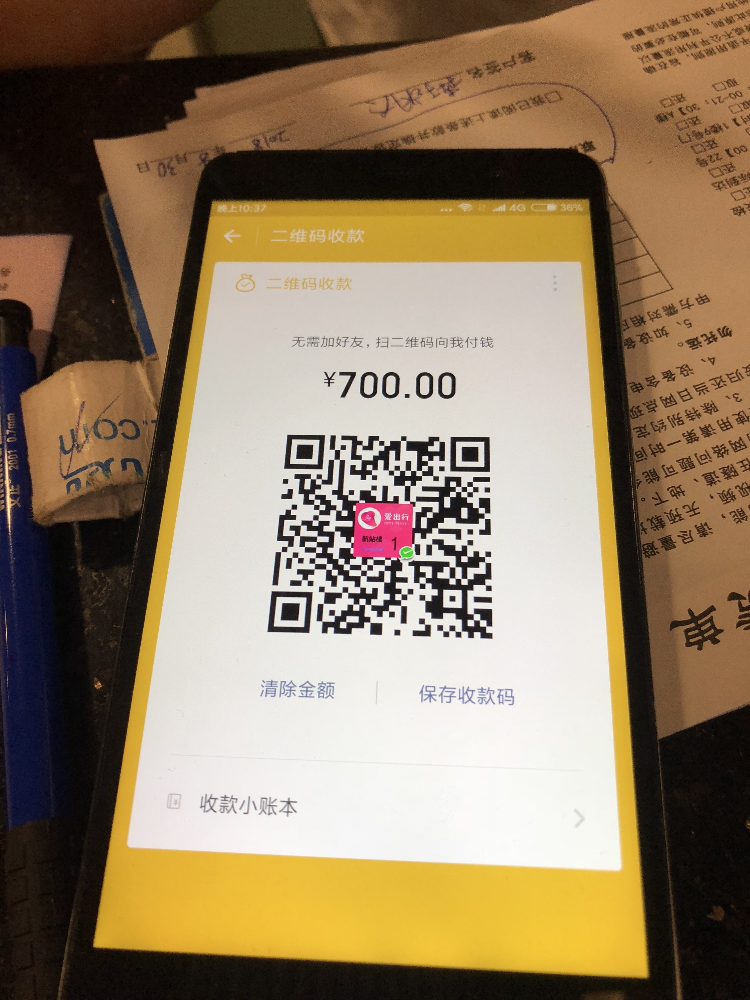
写真8.モバイルWi-Fiの支払い画面 デポジットは返却時にアプリを通して返金可能だ
空港内にある自動販売機を見ると、カード決済はできずともQRコード決済は可能。アプリ内にある自分のQRコードを表示して、スキャンしてもらうだけ。しかし空港内のネット環境が悪かったため、支払いまで数秒かかり心配になった。
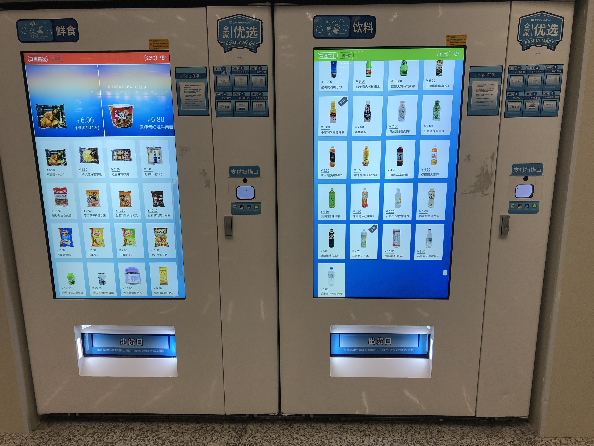
写真9.空港内の自動販売機 現金を入れる口はない
1.2もちろんタクシーも
「タクシーではWeChat Pay払いが当たり前」自分が乗ったタクシーの運転手がそう教えてくれた。タクシー内に印刷されたQRコードがあるので自身のWeChat PayアプリでこのQRコードに送金することができる。このとき料金はメーターに表示された金額を利用者が入力するため、もしチップを払いたい場合は指定された通常料金より多めに払うことも可能だ。
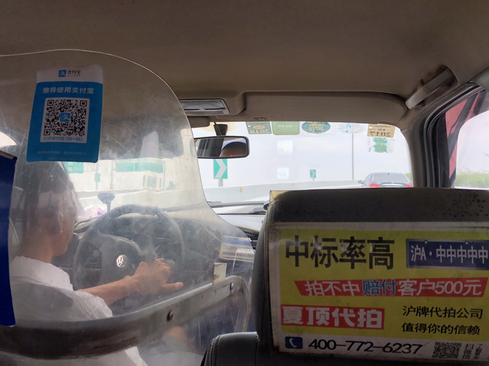
写真10.タクシー車内 画像中ではAlipayのQRコードだが運転手に聞くとWeChat Payでも支払い可能だった
1.3市内のゲームセンター
こんな場所でもキャッシュレス。市内のゲームセンターでは遊びたい台にあるQRコードをアプリで読み取り送金するとすぐに利用可能となる。WeChat Pay内にあるミニプログラムと言われるサービスを利用すれば、1回無料だったので実際に挑戦したが、可愛いぬいぐるみは取れず。結局3回ほどやっても取れず、諦めた（1回無料は怖い）。
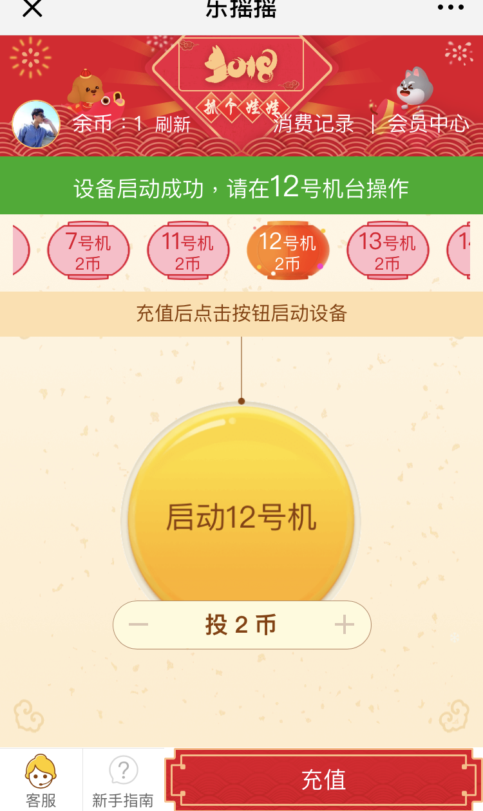
写真11.ゲームセンターに表示されていたQRコードを読み取った後の携帯画面
1.4レストランでは座席支払い可能
中国市内の多くのレストランでは、席にQRコードが設置されていた。お会計の際に、このQRコードをWeChat Payアプリなどで読み込むと自分が注文した料理が画面に表示され、そのままWeChat Payで支払うことができた。支払った後は店員に一声かけるだけ。このためにわざわざ伝票を持ってレジに並ぶ必要はなく、非常に便利と感じた。支払った金額の明細はWeChat Payアプリに表示されるので、いつどこで何に使ったかの確認が容易である。
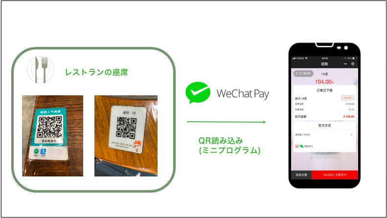
写真12.多くのレストランでは座席支払いが可能だ
また、支払い後にはその店舗で使える割引クーポンがアプリ内で表示され、モバイル決済ならではの強みを感じた。
1.5 1人カラオケに挑戦
日本で見かけることはないが、中国では駅構内や空港などさまざまな場所で小型カラオケボックスが設置されていた。店員はいないため、もちろんQRコード決済が必要でキャッシュレスである。音漏れはしないと思うが、壁が透明なので少し恥ずかしい。しかしせっかくなので挑戦。モニター横にあるQRコードをWeChat Payで読み取るとミニプログラムが起動し、そこから料金を支払うことができる。日本の曲も登録されていたので、中国の駅構内で「世界に一つだけの花」を熱唱することに成功。歌い終わるとなんとアプリ内に歌声が録音されており、保存可能。またこの歌声はWeChatに投稿可能なので、友人とのトークやタイムラインでも簡単に共有することができる。自分はしていないが。
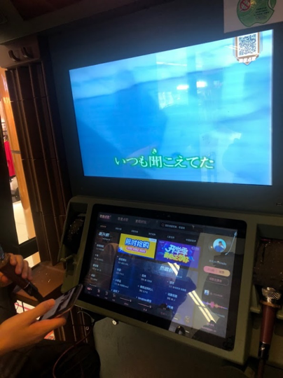
写真13.カラオケの様子 画面上には自分のWeChatアカウントが同期される
ちなみに20分25中国元なのでそこまで安いわけではなかった。自分の歌声を録音したい方はぜひ。
この他にもWeChat Payがあればショッピングセンターや映画館、新幹線の座席購入まで何でも支払い可能。早く日本でも普及してもらいたいと感じた。
2.中国のシェア自転車事情
2.1料金はたった数十円 「Mobike」で市内観光
旅行していて、個人的に最も便利だと感じたキャッシュレスのサービスはシェア自転車。中国ではさまざまな企業がシェア自転車業界に参入しているが、特に目立つオレンジ色が特徴のMobikeの数が多かった。このMobikeは専用アプリをダウンロードして、アカウント作成をすれば誰でも利用可能。決済手段はWeChat PayやAlipayはもちろん、日本のクレジットカードでも支払い可能なのは非常にうれしかった。
乗り方は路上に止まっているMobikeに貼られているQRコードを専用アプリで読み取るだけ。数秒後にロックが自動で外れ利用可能となる。これでどこへでも移動でき、もし降りたい場合は適当な場所にMobikeを止めて、手動でロックをする。するとアプリに通知が入り、WeChat Payアプリなど連動した決済手段から引き落とされる仕組みだ。
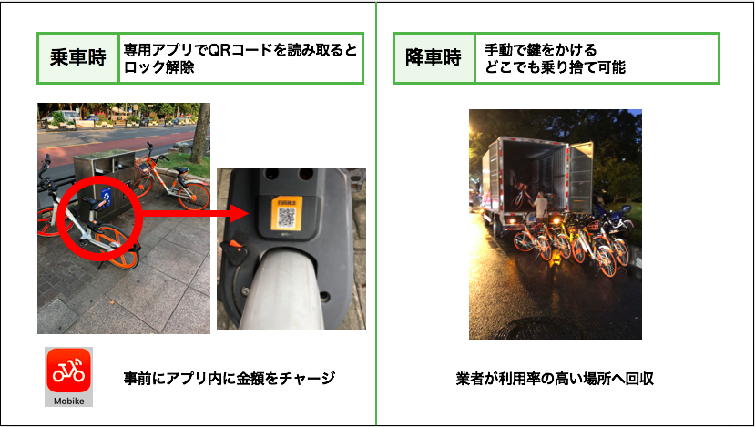
写真14.Mobikeの使用方法 適当に乗り置かれた自転車は業者が回収
料金は実際の移動距離1km12分で16円と非常に安く、旅中のちょっとした移動はこれをいつも使っていた。利用した後にアプリ上では移動距離や金額、またCO2排出減量や消費カロリーなども確認することができる。懸念点としては、移動中はBluetoothをonにしなければならず、充電の減りが早いところ。それ以外は完璧。
初めて使用した日の夜にちょうど見かけたのだが、適当に乗り置かれた自転車を業者が回収しており、駅前などの利用率の高い場所へ運ばれていた。
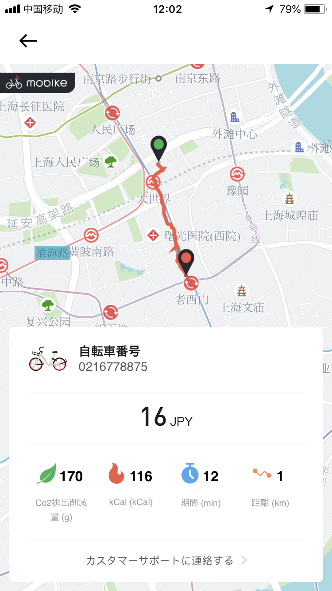
写真15.利用後はアプリ内で移動距離などを確認することができる
3.アリババも出資 完全キャッシュレスな新型スーパー「Hema」
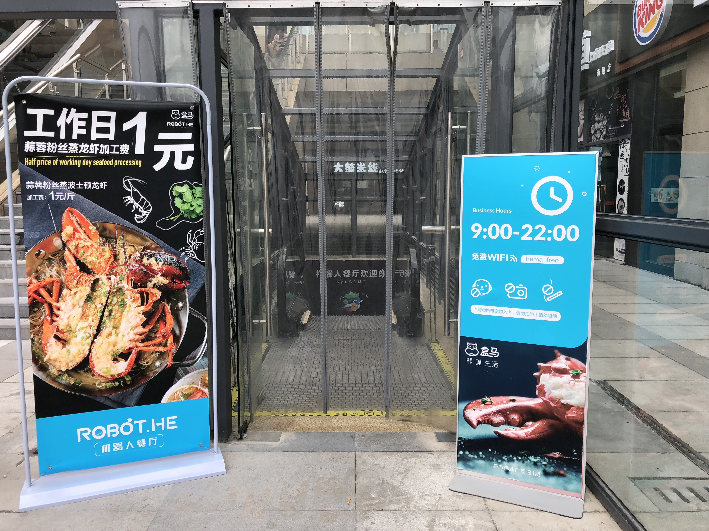
写真16.完全キャッシュレススーパー「Hema」
Fintech領域ではAlipayを主体にさまざまなサービスを展開しているアリババ。そんなアリババは生鮮食品スーパー「盒馬鮮生（ファーマーションシェン）」に出資し、上海市内を中心に新型スーパー「Hema」を拡大している。「Hema」は完全キャッシュレス店舗となっており、使用できる決済手段はAlipayのみ。このスーパーでは、店舗で購入できる商品はアプリを通してネット注文も可能になっていた。場所は市内から少し離れているのもあり、実際に入ってみると観光客は全く見当たらない。
このスーパーではまず魚介類などをAlipayで購入すると、調理されたものが横のレストランに自動で運ばれる。利用者は調理された海鮮料理をそのレストランで食べることができる。せっかくなのでロブスターとカニを購入。
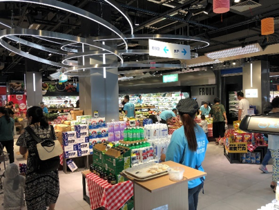
写真17.店内の様子。上にあるレールにはオンライン注文された商品が運ばれていた
購入したロブスターとカニが自動ロボットにより横のレストランに運ばれる。レストランに入るときにAlipayのアプリで入り口にあるQRコードをスキャンし表示された座席に向かうと、座席にあるモニターには先ほど購入したロブスター達が調理中という表示になっていた。数分後には回転寿司と同じように料理がレーンに乗って自動で座席に到着。
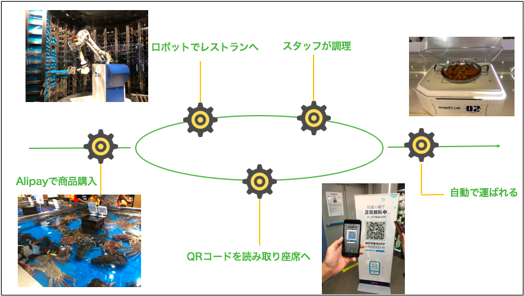
写真18.購入から到着までのフロー
店内では多くのスタッフが通常のスーパーと同様に食品の試食や在庫の管理をしている一方で、アプリの使い方の分からないお客に対してのサポートやオンライン注文への対応などもしており随時バタバタしていた。英語が通じるスタッフがほとんどいなかったので大変ではあったが、忙しい中とても親切に教えてくれた。
今回使用したAlipayは仮アクティベート状態だったため、入り口のQRコードを読み込んでもエラーが出てしまい、通常のフローとは異なり店員のAlipayを利用してレストランに入ることになった。本アクティベートのためには中国の電話番号の登録などが必須となる。そのためこのレストランは、物珍しさで来る観光客用というよりは地元の生活に溶け込んでいるレストラン・スーパーといった印象が強かった。地元の人にも大変人気で、訪れた日は待ち時間が30分以上と長かったため今後の店舗増加に期待。
4.無人コンビニ「24h」
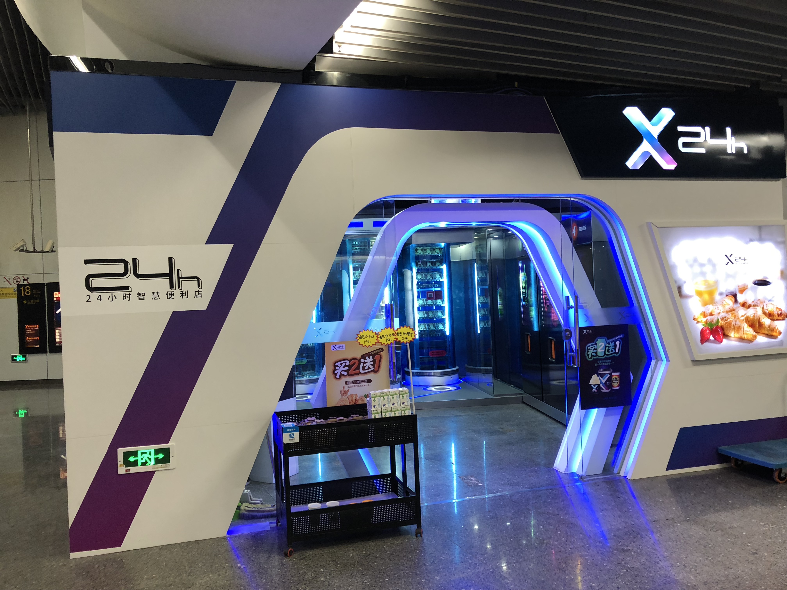
写真19.駅内にあるネオンが輝くコンビニ「24h」
市内の駅内にある無人コンビニ「24h」も調査してみた。ここではQRコード決済のみ支払い可能であり、他のキャッシュレスコンビニとは違いその場で温かいパンや冷たい飲み物が購入可能とのこと。
近代的な店舗の雰囲気を見て期待度は増したが、実際利用してみると普段使用しているような自販機と大して変わらないなというのが正直な印象。無人コンビニというコンセプトだが、スタッフは3名おり、使い方の分からないお客のサポートをしていた。
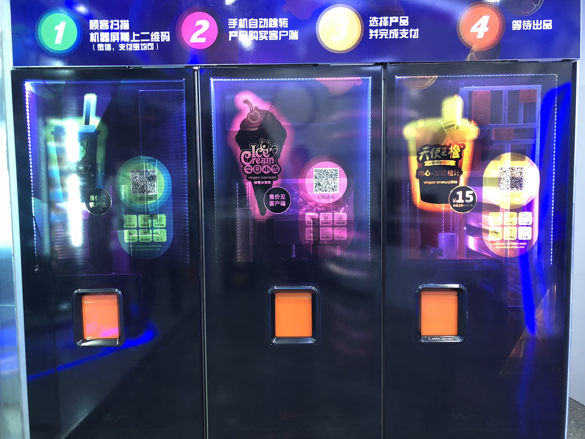
写真20.QRコードを読み取ると機械がその場でアイスなどを作ってくれる
5.中国のまとめ
このように中国ではそんなところまで？と思うほどQRコード決済が浸透していた。その急速な広がりの背景として、よくニュースでは中国の国民性や偽札の問題などを挙げているが、実際に現地の方に聞いてみたところ、「周りが使っているから」「便利だから」という意見が多かった。個人間送金をするためには送金をしたい相手も同じアプリを使っている必要があり、中国ではほとんどの国民が使用しているので当たり前のように送金できる環境が整っていた印象だ。
総まとめ 台湾・中国
台湾と中国、距離は近いといえどキャッシュレスの普及率や広がり方は全然違う。台湾では国内独自のQRコード決済はまだ浸透していないがAlipayやWeChat Pay、LINE Payが広がりつつあった。QRコード決済は実際利用してみると、正直なところアプリを開きQRコードをスキャンする動作は日本で普及しているSuicaなどと比べ面倒に感じた。だが先述したデポジットの返金など、カード決済では難しい操作も楽になるので、ぜひ日本でも普及してほしい。
次回は、あまり知られていないがここ数年でクレジットカード大国と化した3カ国目オーストラリアと、中国同様QRコード決済によるキャッシュレスの波がきている4カ国目インドについてまとめてみます！